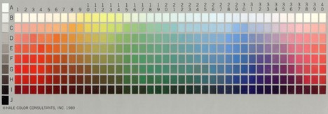
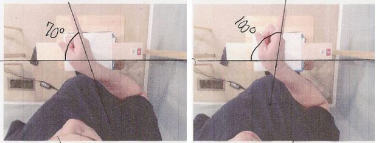
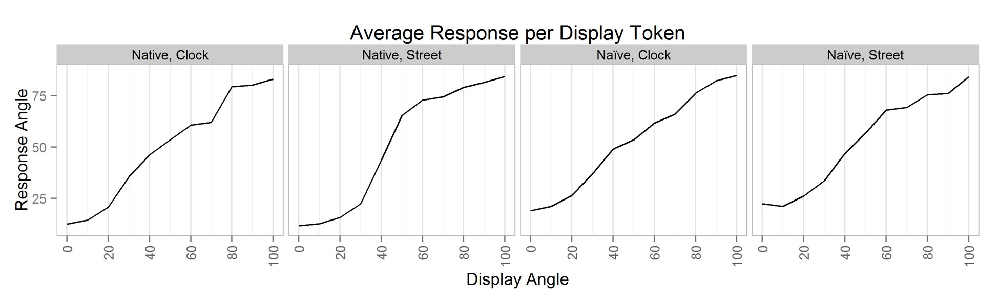
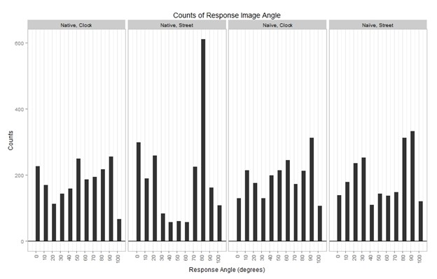
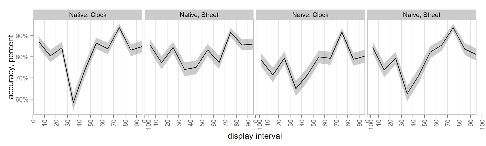

Categorical Perception of Palm Orientation in American Sign Language
by Stephen Richard DeVilbiss Moss
References
Baker, S. A., Idsardi, W. J., Golinkoff, R., & Petitto, I. (2005). The perception of handshapes in American sign language. Memory & Cognition, 33(5), 887-904.
doi:10.3758/BF03193083
Best, C. T., Mathur, G., Miranda, K. A., & Lillo-Martin, D. (2010). Effects of sign language experience on categorical perception of dynamic ASL pseudosigns.
Attention, Perception, & Psychophysics, 72(3), 747-762. doi:10.3758/APP.72.3.747
Cheal, J. L., & Rutherford, M. D. (2013). Context-dependent categorical perception of surprise. Perception, 42(3), 294-301.
Emmorey, K., McCullough, S., & Brentari, D. (2003). Categorical perception in American Sign Language. Language And Cognitive Processes, 18(1), 21-45.
Holmes, K. J., & Wolff, P. (2012). Does categorical perception in the left hemisphere depend on language?. Journal Of Experimental Psychology: General, 141(3), 439-443.
Kuhl, P (1991). Human adults and human infants show a “perceptual magnet effect” for the prototypes of speech categories, monkeys do not. Perception and Psychophysics, 50, 93-107.
Liberman, A.M., Cooper, F.S., Shankweiler, D.P., & Studdert-Kennedy, M. (1967). Perception of the speech code. Psychological Review, 74, 431-461. doi:10.1037/h0020279
Liberman, A. M., Harris, K. S., Hoffman, H. S., & Griffith, B. C. (1957). The discrimination of speech sounds within and across phoneme boundaries. Journal of
Experimental Psychology, 54, 5, 358-368.
Morford, J. P., Grieve-Smith, A. B., MacFarlane, J., Staley, J., & Waters, G. (October 01, 2008). Effects of language experience on the perception of American Sign
Language. Cognition, 109, 1, 41-53.
Palmer, S. B., Fais, L., Golinkoff, R. M., & Werker, J. F. (2012). Perceptual narrowing of linguistic sign occurs in the 1st year of life. Child Development, 83, 2.
Roberson, D., & Davidoff, J. (2000). The categorical perception of colors and facial expressions: the effect of verbal interference. Memory & Cognition, 28, 6, 977-86.
Sandler, W., & Lillo-Martin, D. C. (2006). Sign language and linguistic universals. Cambridge, UK: Cambridge University Press.
Valli, C., Lucas, C., Mulrooney, K. J., & Villanueva, M. (2011). Linguistics of American Sign Language: An introduction. Washington, D.C: Clerc Books.
Appendix A

The Hale Color Array used by Berlin and Key in their 1968 studies of basic color terms.
Appendix B
The array of response tokens used by participants to identify category label of the token presented in the identification task.
Appendix C

Examples of bird's eye photos including lines added for measurement in positions 70° and 100°
Appendix D

Average response angle per each display token separated by condition.
Appendix E

Histogram of total number of responses selected for each along the continuum, separated by condition.
Appendix F

Accuracy by display interval separated by condition.